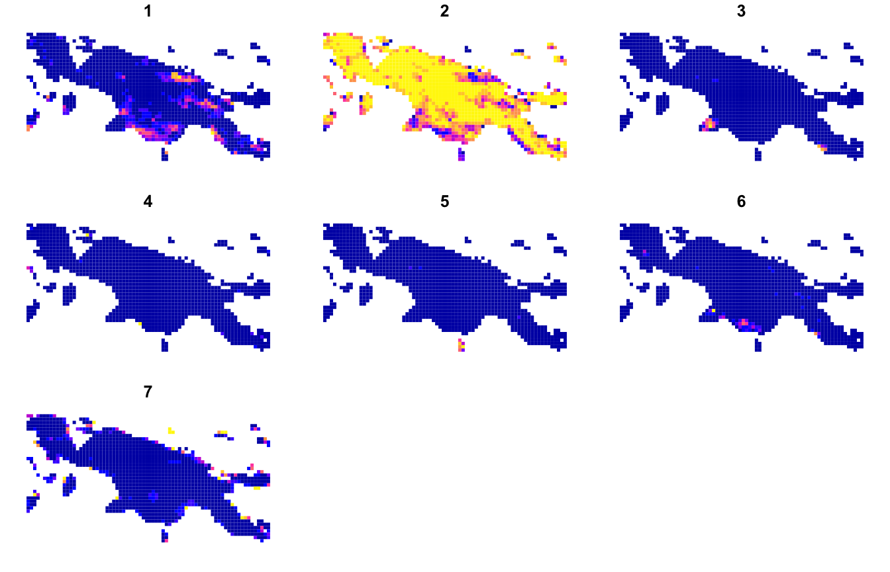
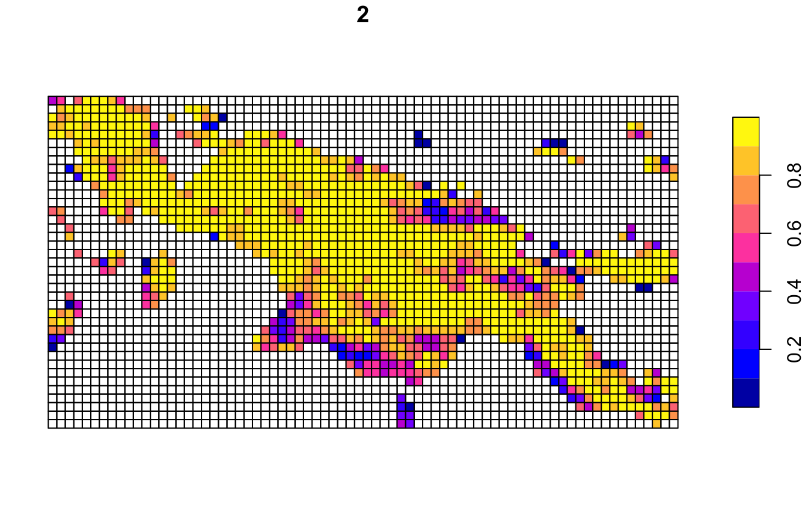
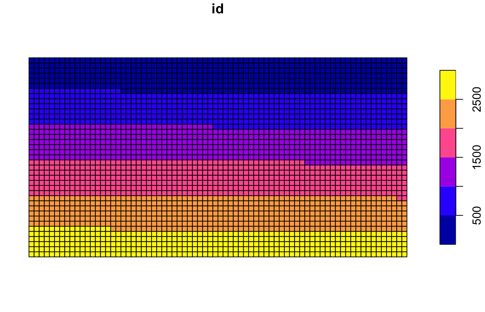
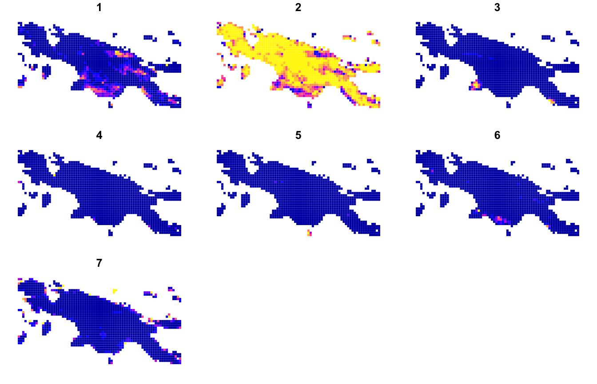
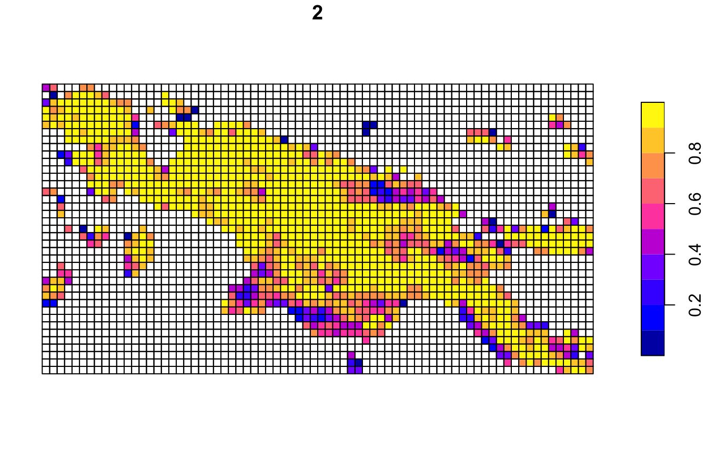

Extracting the proportion of different classes in many regular local landscapes
Jakub Nowosad
2021-07-22
Source:vignettes/articles/v6_composition.Rmd
v6_composition.RmdThe pattern-based analysis, as explained in Nowosad (2021), is concerned with describing spatial patterns for many local landscapes - blocks of cells containing a local pattern of a cell-based variable(s). One of its core ideas is to transform information stored in each local landscape’s cells into a spatial signature — a statistical description of a pattern.
The proportion of different classes, also known as composition, can be considered as a basic spatial signature of categorical rasters. It is well-known that composition is a fundamental element of a landscape pattern (Riitters, 2019), and for example, the proportion of different land cover classes has a significant impact on environmental processes.
The role of this vignette is to show how to calculate the proportion of different classes in many regular local landscapes using the motif package. Let’s start by attaching necessary packages:
For this vignette, we use the "raster/landcover2015.tif" file, which contains land cover data for New Guinea, with seven possible categories: (1) agriculture, (2) forest, (3) grassland, (5) settlement, (6) shrubland, (7) sparse vegetation, and (9) water.
landcover = read_stars(system.file("raster/landcover2015.tif", package = "motif"))
landcover = droplevels(landcover)
plot(landcover, key.pos = 4, key.width = lcm(5), main = NULL)
#> downsample set to c(13,13)
New grid
One possible approach is just to set up size of a local landscape in the lsp_signature() function. For example, window = 100 divides the input raster into a number of non-overlapping 100 by 100 cells local landscapes. To extract the proportion of different classes in the landcover raster, we need to set type to "composition"1.
landcover_comp = lsp_signature(landcover,
type = "composition",
threshold = 1,
window = 100)Information about the composition of each local landscape is stored in a list-column named signature.
landcover_comp
#> # A tibble: 2,886 x 3
#> id na_prop signature
#> * <int> <dbl> <list>
#> 1 1 0.982 <dbl [1 × 7]>
#> 2 2 0.978 <dbl [1 × 7]>
#> 3 3 1 <dbl [1 × 7]>
#> 4 4 0.934 <dbl [1 × 7]>
#> 5 5 0.357 <dbl [1 × 7]>
#> 6 6 0.0398 <dbl [1 × 7]>
#> 7 7 0.114 <dbl [1 × 7]>
#> 8 8 0.465 <dbl [1 × 7]>
#> 9 9 0.884 <dbl [1 × 7]>
#> 10 10 1 <dbl [1 × 7]>
#> # … with 2,876 more rowsObjects of this structure can be next used in many spatial pattern-based analysis, such as search, comparision, or clustering. However, it could be useful for some operations to have each proportion as a separate column. This can be done with the lsp_restructure() function.
landcover_comp = lsp_restructure(landcover_comp)Now, each land cover category has a separate column, but the columns’ names are meaningless. To add column names representing actual land cover categories, we can extract correct names from the landcover_comp object attributes.
true_colnames = attr(landcover_comp, "metadata")$vals[[1]]
names(landcover_comp)[3:ncol(landcover_comp)] = true_colnames
landcover_comp
#> # A tibble: 2,886 x 9
#> id na_prop `1` `2` `3` `4` `5` `6` `7`
#> * <int> <dbl> <dbl> <dbl> <dbl> <dbl> <dbl> <dbl> <dbl>
#> 1 1 0.982 0 0.5 0 0 0 0 0.5
#> 2 2 0.978 0 0.568 0 0 0 0 0.432
#> 3 3 1 NaN NaN NaN NaN NaN NaN NaN
#> 4 4 0.934 0 0.691 0 0 0 0 0.309
#> 5 5 0.357 0.000311 0.958 0 0.000778 0 0 0.0408
#> 6 6 0.0398 0.000833 0.977 0 0 0 0 0.0226
#> 7 7 0.114 0.000452 0.965 0 0 0 0 0.0341
#> 8 8 0.465 0 0.877 0 0 0 0 0.123
#> 9 9 0.884 0.0344 0.552 0 0.000861 0 0 0.412
#> 10 10 1 NaN NaN NaN NaN NaN NaN NaN
#> # … with 2,876 more rowsThe above result is a special data frame of class lsp. This allows us to easily add spatial information about the borders of the local landscapes with lsp_add_sf().
landcover_comp_sf = lsp_add_sf(landcover_comp) # this function adds our grid as an sf objectNow, the proportions of land cover categories can be visualized with the plot() function 2. All categories:

Just the second category - forest:
plot(landcover_comp_sf["2"])
Existing areas
The second approach is to create or use existing local landscape areas in the form of an sf polygons. Importantly, this approach could be visibly slower - therefore, if your local landscapes are represented by a regular grid, we recommend using the first approach.
For example, here, we create a my_grid object - a set of sf polygons, where each polygon has a size of 30 by 30 km and a unique id column.
my_grid = st_make_grid(landcover, cellsize = 30000)
my_grid = st_sf(data.frame(id = seq(length(my_grid), 1, by = -1)), geom = my_grid)
plot(my_grid)
The next steps are the same as in the first approach - we use the lsp_signature(), lsp_restructure(), and lsp_add_sf() functions. There are only two slight differences. Firstly, we use our my_grid object as the value of the window argument.
landcover_comp2 = lsp_signature(landcover,
type = "composition",
threshold = 1,
window = my_grid)
landcover_comp2 = lsp_restructure(landcover_comp2)
names(landcover_comp2)[3:ncol(landcover_comp2)] = attr(landcover_comp2, "metadata")$vals[[1]]
landcover_comp2
#> # A tibble: 2,886 x 9
#> id na_prop `1` `2` `3` `4` `5` `6` `7`
#> * <int> <dbl> <dbl> <dbl> <dbl> <dbl> <dbl> <dbl> <dbl>
#> 1 1 1 NaN NaN NaN NaN NaN NaN NaN
#> 2 2 1 NaN NaN NaN NaN NaN NaN NaN
#> 3 3 1 NaN NaN NaN NaN NaN NaN NaN
#> 4 4 1 NaN NaN NaN NaN NaN NaN NaN
#> 5 5 1 NaN NaN NaN NaN NaN NaN NaN
#> 6 6 1 NaN NaN NaN NaN NaN NaN NaN
#> 7 7 1 NaN NaN NaN NaN NaN NaN NaN
#> 8 8 1 NaN NaN NaN NaN NaN NaN NaN
#> 9 9 1 NaN NaN NaN NaN NaN NaN NaN
#> 10 10 1 NaN NaN NaN NaN NaN NaN NaN
#> # … with 2,876 more rowsThe second difference is when we want to convert our results to a spatial object. In this case, we need to provide our my_grid object as the value of the window argument in lsp_add_sf().
Proportions of each land cover categories:
landcover_comp_sf2 = lsp_add_sf(landcover_comp2, window = my_grid)
plot(landcover_comp_sf2[-c(1, 2)], border = NA)
Just the second category - forest:
plot(landcover_comp_sf2["2"])
References
- Riitters, K. Pattern metrics for a transdisciplinary landscape ecology. Landscape Ecol 34, 2057–2063 (2019). https://doi.org/10.1007/s10980-018-0755-4
- Nowosad, J. Motif: an open-source R tool for pattern-based spatial analysis. Landscape Ecol 36, 29–43 (2021). https://doi.org/10.1007/s10980-020-01135-0